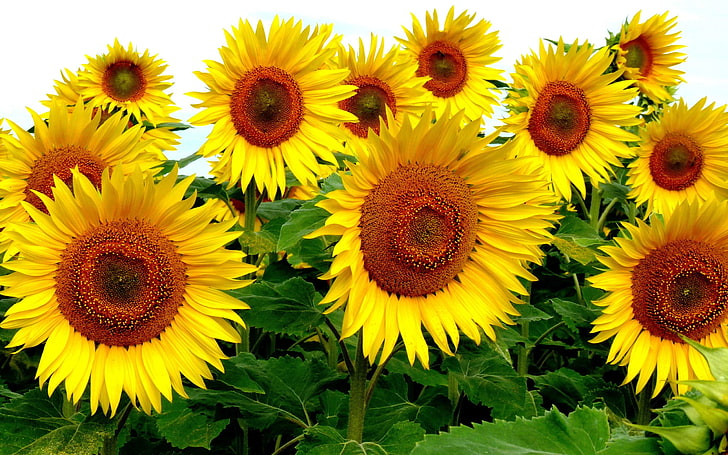
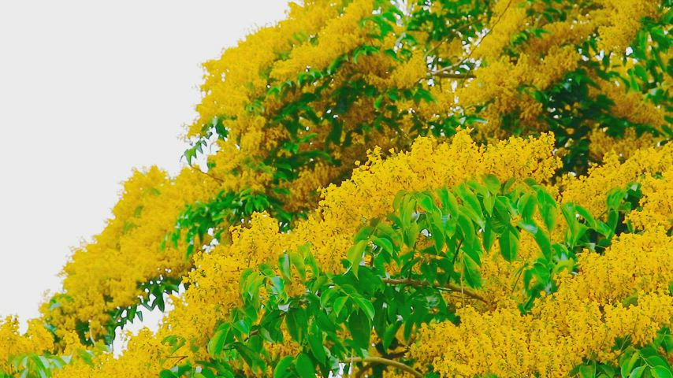

Coreopsis is a cheerflul yellow flower that happenes to be native to lowa. It keeps pollinators happy and brings plenty of sunny cheer from early summer throught fall. There are over 100 varieties of coreopsis, including both perennial and annual types. Ther are also available in a wide range of colors, from vibriant bright yellow to rich orange and deep red, if you like to experinment with and even broader specturm.


